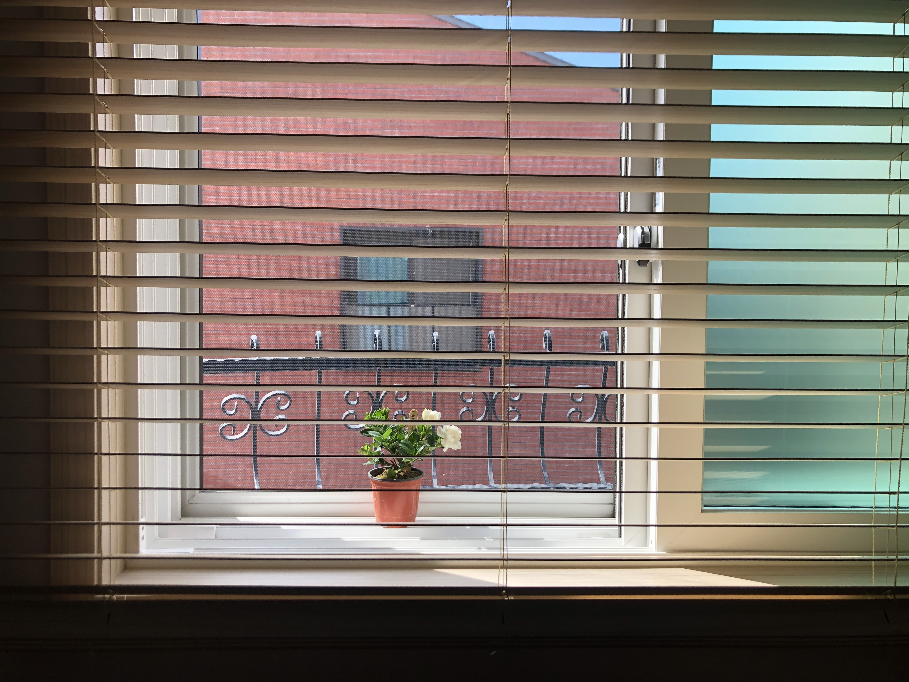

Menu
페이지 소개
페이지 운영자 소개
Career 재정비
Personal 재정비
Gallery
페이지 소개
이것은 제가 2020년 5월 30일 부로 저의 두 번째 직장을 퇴사하고,
Post-corona
가 대두되는 시점에
스스로의 커리어와 삶을 재정비하며 한 활동들을 정리하기 위한 페이지 입니다.
June 2020
coding 배우기>

July 2020
August 2020/End of 1st quarter